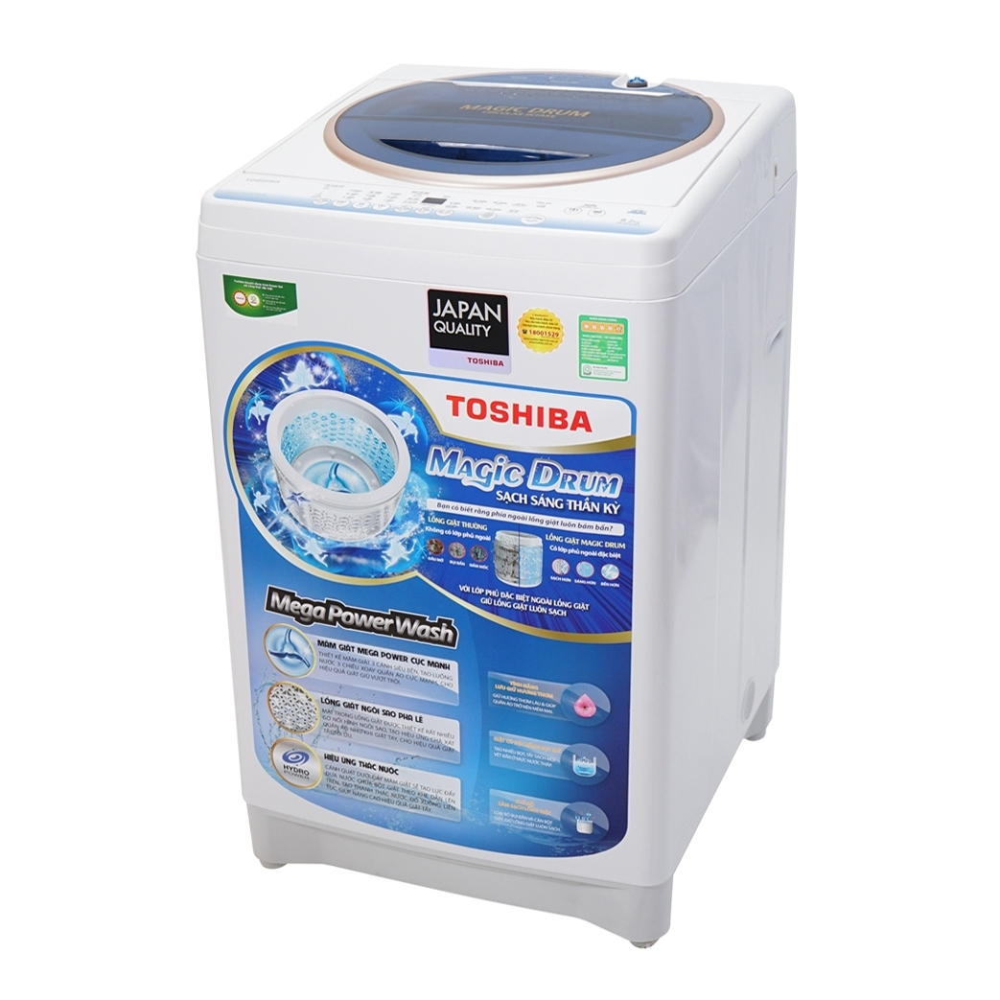

Máy giặt Toshiba là một trong những sản phẩm hàng đầu trong lĩnh vực máy giặt, mang lại hiệu suất và chất lượng vượt trội. Tuy nhiên, như bất kỳ thiết bị điện tử nào khác, máy giặt cũng có thể gặp phải các vấn đề kỹ thuật. Một trong những sự cố phổ biến là mã lỗi E73. Trong bài viết này, chúng ta sẽ tìm hiểu về nguyên nhân gây ra lỗi E73 trên máy giặt Toshiba và cách khắc phục một cách hiệu quả.
I.Lỗi E73 máy giặt Toshiba là lỗi gì?

màn hình hiện lỗi E73
Lỗi E73 trên máy giặt Toshiba xuất phát từ vấn đề liên quan đến quá trình vắt hoặc có thể do hỏng board mạch điều khiển, theo mã lỗi của nhà sản xuất.
Trong quá trình hoạt động bình thường, máy giặt Toshiba sẽ thông báo vấn đề này khi chuyển sang chu trình vắt. Khi đó, người dùng sẽ nghe thấy tiếng còi báo tít tít, và màn hình LED sẽ hiển thị mã lỗi E73, đồng thời máy giặt dừng hoàn toàn hoạt động.
Để khắc phục vấn đề này, cần kiểm tra kỹ thuật vắt và kiểm tra tình trạng board mạch điều khiển để đưa ra biện pháp sửa chữa hoặc thay thế cần thiết.
II.Nguyên nhân máy giặt Toshiba báo lỗi E73
Khi máy giặt Toshiba thông báo lỗi E73, người sử dụng cần hiểu rõ về các nguyên nhân chính dẫn đến vấn đề này để có thể thực hiện các biện pháp khắc phục hiệu quả. Dưới đây là mô tả chi tiết về các nguyên nhân gây lỗi E73 trên máy giặt Toshiba:
1.Vị trí đặt máy bị ghiêng:
- Một trong những nguyên nhân phổ biến là vị trí đặt máy giặt không đúng, dẫn đến máy bị ghiêng hoặc lệch.
- Sự mất cân bằng này có thể ảnh hưởng đến quá trình vận hành của máy giặt và gây ra lỗi E73 trong quá trình sử dụng.
2.Khối Lượng Quần Áo Quá Lớn:
- Máy giặt Toshiba báo lỗi E73 có thể xuất phát từ việc đặt quá nhiều quần áo vào lồng giặt, làm tăng áp lực và làm máy quá tải.
- Điều này gây áp lực lớn hơn so với khả năng chịu đựng của máy, dẫn đến sự cản trở trong quá trình vắt và kích thích máy báo lỗi.
3.Công Tắc Chống Rung Gặp Trục Trặc:
- Công tắc chống rung được thiết kế để giảm rung động của máy giặt trong quá trình hoạt động.
-Nếu công tắc này gặp sự cố, có thể dẫn đến việc máy giặt không thể duy trì cân bằng, gây lỗi E73.
4.Board Mạch Điện Tử Hư Hỏng:
- Một nguyên nhân khác có thể là board mạch điện tử trên máy giặt đã bị hỏng.
-Nếu có sự cố ở mức điều khiển điện tử, máy sẽ không thể thực hiện chính xác các chức năng vắt, dẫn đến thông báo lỗi E73.
III.Cách khắc phục lỗi E73 của máy giặt Toshiba
Khi máy giặt Toshiba của bạn gặp phải thông báo lỗi E73, hãy thực hiện các bước dưới đây để xác định nguyên nhân và khắc phục vấn đề một cách nhanh chóng và hiệu quả.
Bước 1: Kiểm Tra Vị Trí Đặt Máy Giặt

Máy giặt Toshiba
Trước hết, tắt máy, rút nguồn điện và kiểm tra vị trí đặt máy giặt. Đảm bảo rằng máy không bị nghiêng và chân đế máy giặt không bị lệch. Nếu phát hiện vấn đề, hãy di chuyển máy đến một vị trí khô ráo, bằng phẳng hoặc thay chân đế máy giặt mới.
Bước 2: Kiểm Tra Khối Lượng Quần Áo trong Lồng Giặt
- cửa máy và kiểm tra lượng quần áo trong lồng giặt. Nếu quá nhiều quần áo được đặt vào, hãy lấy bớt những chiếc dày và nặng ra để giặt trong mẻ sau.
Đồng thời, đảm bảo quần áo còn lại trong lồng giặt được tháo gỡ và phân phối đều để tối ưu hóa hiệu suất máy.
Bước 3: Kiểm Tra Công Tắc Chống Rung của Máy Giặt
Công tắc chống rung đảm nhiệm vai trò bảo vệ, ngắt mạch khi phát hiện rung động không bình thường. Kiểm tra kỹ lưỡng, nếu thấy thanh đồng ở công tắc chống rung tiếp xúc kém hoặc không tiếp xúc nhau, hãy thay thế bằng một công tắc mới để giải quyết triệt để lỗi E73.
Bước 4: Kiểm Tra Board Mạch Điều Khiển của Máy Giặt
Nếu sau khi thực hiện các bước trên mà lỗi E73 vẫn xuất hiện, có thể board mạch điều khiển đã bị hỏng. Điều này là một vấn đề nghiêm trọng, yêu cầu sự can thiệp chuyên môn.
Nếu bạn không có kỹ năng sửa chữa, hãy liên hệ với trung tâm bảo hành chính hãng Toshiba hoặc các đơn vị sửa chữa máy giặt đáng tin cậy để nhận được hỗ trợ kỹ thuật chất lượng nhất. Đừng tự mình thực hiện nếu không có đủ kiến thức và kinh nghiệm để tránh làm tổn thương thêm máy giặt của bạn.
VI. Những lưu ý sử dụng máy giặt toshiba để hạn chế
lỗi e7-3 và duy trì hiệu suất
Để bảo vệ máy giặt Toshiba của bạn khỏi lỗi E7-3 ( E73) và duy trì hiệu suất tối ưu, hãy tuân theo những lưu ý dưới đây khi sử dụng máy:
-
Không Quá Tải Máy:
- Luôn ước tính lượng quần áo cần giặt và tránh quá tải máy giặt. Quá tải có thể dẫn đến lỗi E73 và gây ảnh hưởng đến cơ cấu vận hành của máy.
-
Đặt Máy Trên Bề Mặt Phẳng:
- Đảm bảo máy giặt đặt trên bề mặt phẳng và không nghiêng. Máy giặt mất cân bằng có thể dẫn đến các vấn đề, bao gồm cả lỗi E73.
- Sử Dụng Chân Đế (Nếu Có):
-Nếu máy giặt có chân đế, hãy sử dụng chúng để cải thiện ổn định và cân bằng của máy giặt.
-
Vệ Sinh Máy Thường Xuyên:
- Thường xuyên vệ sinh máy giặt để đảm bảo không có cặn bẩn hay vật cản gây cản trở hoạt động của cảm biến nhiệt độ và bo mạch điều khiển.
-
Không Mở Cửa Giữa Chu Trình Giặt:
- Tránh mở cửa máy giặt giữa quá trình giặt, điều này có thể gây mất cân bằng và dẫn đến lỗi E73.
-
Đọc Hướng Dẫn Sử Dụng:
- Đọc kỹ hướng dẫn sử dụng của máy giặt Toshiba để hiểu rõ cách sử dụng đúng cách và các quy định cụ thể.
-
Sử Dụng Chế Độ Giặt Phù Hợp:
- Chọn chế độ giặt phù hợp với loại quần áo và mức độ bẩn để đảm bảo máy giặt hoạt động hiệu quả mà không gặp vấn đề.
-
Kiểm Tra và Bảo Dưỡng Định Kỳ:
- Thực hiện kiểm tra và bảo dưỡng định kỳ cho máy giặt, bao gồm kiểm tra cảm biến nhiệt độ và các thành phần quan trọng khác.
- Liên Hệ Dịch Vụ Sửa Chữa Chuyên Nghiệp:
- Nếu bạn gặp lỗi E7-3 hoặc các vấn đề khác không thể tự khắc phục, hãy liên hệ với dịch vụ sửa chữa máy giặt chuyên nghiệp để kiểm tra và sửa chữa đầy đủ. Đừng tự mình thực hiện nếu không có kiến thức và kỹ năng cần thiết.
V.Dịch Vụ Sửa Máy Giặt Tại Nhà của Điện Lạnh Lộc Thiên Phát:
- Chuyên Nghiệp và Kinh Nghiệm
- Đội ngũ kỹ thuật viên của Điện Lạnh Hoàng Gia Điện Lạnh được đào tạo chuyên sâu và có nhiều kinh nghiệm trong lĩnh vực sửa chữa máy giặt. Sự chuyên nghiệp là cam kết hàng đầu.
2.Điều Tra và Chuẩn Đoán Nhanh Chóng:
- Khi nhận được yêu cầu sửa máy giặt, chúng tôi sẽ tiến hành điều tra và chuẩn đoán vấn đề một cách nhanh chóng, giúp xác định nguyên nhân lỗi một cách chính xác.
3.Trang Thiết Bị Hiện Đại:
- Điện Lạnh Hoàng Gia Điện Lạnh sử dụng trang thiết bị hiện đại và công nghệ tiên tiến trong quá trình sửa chữa, giúp đảm bảo hiệu suất và độ chính xác của dịch vụ.
4.Sửa Chữa Mọi Loại Lỗi:
- Chúng tôi có khả năng sửa chữa mọi loại lỗi phổ biến trên máy giặt, bao gồm cả các vấn đề liên quan đến cơ học, điện tử, và các thành phần khác.
5.Thời Gian Phản Hồi Nhanh Chóng:
- Với đội ngũ nhân viên linh hoạt, chúng tôi cam kết đáp ứng nhanh chóng đến mọi yêu cầu sửa chữa, giúp khách hàng giảm thiểu thời gian chờ đợi
6.Dịch Vụ Tận Nơi:
- Chúng tôi cung cấp dịch vụ sửa máy giặt tận nơi, giúp khách hàng tiết kiệm thời gian và công sức, không cần phải mang máy đến trung tâm sửa chữa.
7.Bảo Đảm Chất Lượng:
- Mọi dịch vụ sửa máy giặt của chúng tôi đều được đảm bảo về chất lượng, đồng thời có thể áp dụng các biện pháp bảo hành cho các bộ phận đã được sửa chữa.
Nếu bạn đang gặp vấn đề với máy giặt và đang tìm kiếm dịch vụ sửa chữa đáng tin cậy, hãy liên hệ với Điện Lạnh Lộc Thiên Phát để được hỗ trợ nhanh chóng và chuyên nghiệp.
Tham khảo thêm: - Máy Giặt Bị Chảy Nước Liên Tục. Nguyên Nhân Và Hướng Khắc Phục Như Thế Nào?
- Máy Giặt Toshiba Báo Lỗi E6- Nguyên Nhân Và Hướng Khắc Phục
LIÊN HỆ ĐIỆN LẠNH Hoàng Gia Điện Lạnh
- Địa Chỉ: Head 193 hẻm 21 , kp 11A, Phường Tân Phong, Biên Hoà, Đồng Nai
- Điện Thoại: +84.918.092.848
- Email: hoanggiadienlanh68@gmail.com


.png)


.png)